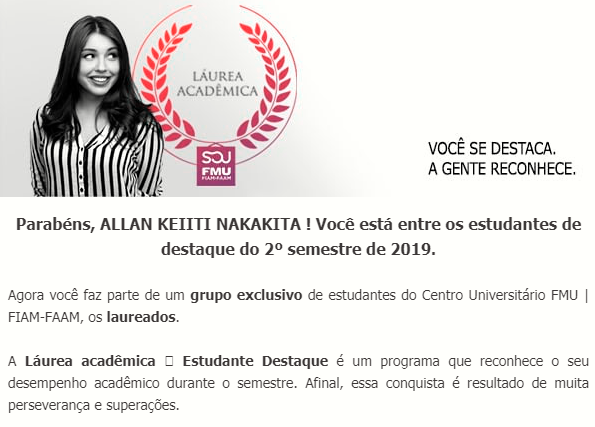

Dia 24 de Junho de 2019 recebi um email informando que sou um dos estudantes de destaque como na figura abaixo, então,
Concluí o ensino superior como Bacharel em Sistemas de Informação com chave de Ouro!

Sobre o último semestre
Posso descrever o último semestre do curso onde tudo esteve ao meu favor, afinal, consegui a promoção de Assistente de
Suporte Técnico para Assistente de M.I.S., as disciplinas eram de Sistema de Informação
Gerencial (M.I.S. sendo traduzido para o Português) como disciplina EAD, Estágio Supervisionado, Processos Decisórios,
Segurança e Auditoria de Sistemas, ou seja todas as matérias já não eram novidade pra mim, afinal 2 delas se tratavam de Planejamento, departamento que
faço parte até o momento dessa postagem e Segurança e Auditoria de Sistemas é referente ao tema que todo mundo que atua na área de Tecnologia já andava antenada,
inclusive com a nova Lei Geral da Proteção de Dados (LGPD).
Portanto, eu tinha a faca e o queijo na mão para conseguir novamente este título né? Então fiz um esforço a mais para conseguir, e digo que
me diverti muito neste último semestre.
E como funciona essa classificação de aluno destaque?
Essa classificação ocorre entre as turmas de cada semestre de determinado curso, e aparentemente (Sim, digo aparetemente pois não tenho certeza)
é coletado a média de todas as notas do boletim do aluno, o que tiver a maior média, recebe o título.
Como foi a cerimônia?
Devido à COVID-19 a cerimônia foi através de uma Live no Youtube onde meu nome foi citado aos
43:41. Enquanto assisti, fiquei mais contente que um amigo que cursou o técnico de Administração comigo também estava assistindo ao video provavelmente por algum colega de sala,
e logo me mandou um print do meu nome listado me parabenizando.
E o título obtido no 2º Semestre de 2018?
Sinceramente, não tenho muito o que digitar sobre ele, pois quando fui informado que eu fui o aluno destaque, eu não acreditei e perguntei pro meu amigo e
antigo colega de sala se ele havia recebido este email de aluno destaque, pois ele que geralmente obtia as melhores notas.
De qualquer forma, foi bacana ter ido à cerimônia com a família e conversado com os outros alunos das outras salas!
Finalizando, meus agradecimentos aos professores que lecionaram durante os 4 anos e a todos que me apoiaram e estudaram junto comigo durante o curso.
E por último, dedico essa conquista a 2 pessoas que não citarei o nome delas aqui. Porém tenho certeza que as duas pessoas vão ler essa dedicação.